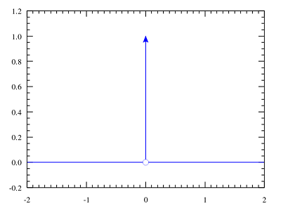

理解卷积 Convolution
Tags: math
数学中的卷积
卷积的wiki：Convolution。
卷积和(convolution sum)的公式是:
\[ y(t) = x(t)*h(t) = \sum _{\tau =-\infty }^{\infty }x(\tau )h(t-\tau )\]
写成积分形式是:
\[ x(t)*h(t) = \int _{-\infty }^{\infty }x(\tau )h(t-\tau )d\tau = \int _{-\infty }^{\infty }x(t-\tau )h(\tau )d\tau \]
这个东西，很难从公式推导上理解（其实是没在网上找到推导过程，只知道和这个东西有关LTI system theory）。不过我想到一个比较好的理解方式。
首先介绍下狄拉克δ函数。
狄拉克δ函数 dirac delta function
狄拉克δ函数的wiki：dirac delta function。
狄拉克δ函数在坐标系上的长相:


（图片来自wiki）
在信号处理科学中狄拉克δ函数被称为单位脉冲信号(unit impulse symbol）。上面这个图也很形象地说明了这一点。
狄拉克δ函数有这样的性质:
\[ delta (t) = \begin {cases} +\infty , t=0 \\ 0, t\neq 0 \end {cases} \]
\[ \int _{-\infty }^{\infty }\delta (t)dt = 1 \]
狄拉克δ函数在t等于0时值为正无穷，t不等于0时则为0，且在整个定义域的积分等于1。
狄拉克δ函数与卷积
考虑一个特殊情况：h(t)是狄拉克δ函数。代入卷积公式，有:
\[ x(t) * h(t) = x(t) * \delta (t) = \int _{-\infty }^{\infty }x(\tau )\delta (t-\tau )d\tau = x(t) \]
(这里省略了推导过程）
这个结果说明，x(t)和狄拉克δ函数卷积的结果还是x(t)，为什么会这样呢？
再看下前面给出的卷积和标准公式：
\[ y(t) = x(t)*h(t) = \sum _{\tau =-\infty }^{\infty }x(\tau )h(t-\tau )\]
把其中的\( h(t - \tau ) \)换成\( \delta (t - \tau ) \)，那么里面的\( t - \tau \)，其实就是让那个脉冲信号在横轴上移动(偏移)\( \tau \)距离。根据狄拉克δ函数的定义，可以知道，当\( t = \tau \)时，\( x(\tau )h(t-\tau ) \)才非0，且等于\( x(\tau ) \)。所以卷积和也就等于\( x(\tau ) \)。（这也算是上面的公式的证明吧）
将这个特殊情况一般化，即不限制h = δ时，就是所谓的卷积公式了。
找到的相关资料
The Convolution Sum for Discrete-Time LTI Systems. Andrew W. H. House